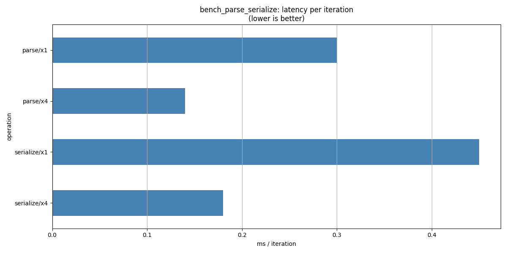

Note
Go to the end to download the full example code.
Profile the C++ parsing and serialization code#
Because the onnx-light core is a native C++ library, only native Linux
profiling tools can attribute wall-clock or instruction samples to individual
C++ functions. The Python cProfile module only sees the Python →
C++ boundary and cannot look inside the C++ implementation.
All-in-one shell script#
benchmarks/profile.sh handles compilation (RelWithDebInfo) and
profiling in a single command. Run it from the repository root:
# gprof — function-level call graph (default)
bash benchmarks/profile.sh gprof -n 20 -t 1
# perf — hardware counter sampling + flame graphs
bash benchmarks/profile.sh perf -n 20 -t 1
# valgrind/callgrind — instruction-level cache simulation
bash benchmarks/profile.sh valgrind -n 20 -t 1
The script:
Runs
cmakewith-DCMAKE_BUILD_TYPE=RelWithDebInfoand-DONNX_LIGHT_BUILD_BENCHMARKS=ON.Compiles
bench_parse_serialize.Runs the benchmark under the chosen profiler.
Prints the top functions from the profile report.
Output directories: build/bench_gprof (gprof), build/bench_rdi
(perf / valgrind).
Benchmark CLI options:
bench_parse_serialize -n <iters> -t <threads> -i <tensors> -d <dim>
-n 20 parse + serialize round-trips (default 20)
-t 1 thread count (1 = sequential, 0 = auto)
-i 40 number of initializer tensors
-d 512 square dimension of each float weight matrix
Note
perf record requires /proc/sys/kernel/perf_event_paranoid <= 1.
On a personal machine: sudo sysctl -w kernel.perf_event_paranoid=1.
import os
import subprocess
import pandas
Build and run the benchmark#
When the environment variable BENCH_PARSE_SERIALIZE_BIN is set the
pre-built binary is used directly. Otherwise the script checks the default
output location of profile.sh (build/bench_rdi). If the binary is
not available (e.g. in CI) sample data is used so the plot can still render.
To get real numbers, run from the repository root before building the docs:
bash benchmarks/profile.sh gprof -n 20 -t 1
_UNITTEST = os.environ.get("UNITTEST_GOING") == "1"
# __file__ is not always defined (e.g. Sphinx Gallery executes scripts without it).
# Fall back to an empty string so the binary search below safely returns None.
_file = globals().get("__file__", "")
_REPO_ROOT = (
os.path.abspath(os.path.join(os.path.dirname(_file), "..", "..", "..")) if _file else ""
)
# Candidate binary paths: env override, then profile.sh output dirs, then legacy.
_CANDIDATES = [
os.environ.get("BENCH_PARSE_SERIALIZE_BIN", ""),
*(
[
os.path.join(_REPO_ROOT, "build", "bench_rdi", "bench_parse_serialize"),
os.path.join(_REPO_ROOT, "build", "bench_gprof", "bench_parse_serialize"),
os.path.join(_REPO_ROOT, "build", "benchmarks", "bench_parse_serialize"),
os.path.join(_REPO_ROOT, "build", "bench_parse_serialize"),
]
if _REPO_ROOT
else []
),
]
_BENCH_BIN = next((p for p in _CANDIDATES if p and os.path.isfile(p)), None)
Run the benchmark and collect timings#
The benchmark is run four times to cover the sequential and parallel (4-
thread) variants of both operations. -d 128 keeps the model small
enough to finish quickly.
_N_ITERS = 5 if _UNITTEST else 100
_DIM = 64 if _UNITTEST else 1024
_N_INIT = 4 if _UNITTEST else 40
def _run(n_threads: int) -> dict | None:
"""Runs the benchmark binary and returns the parsed timing dict.
Args:
n_threads: Thread count forwarded to the ``-t`` argument.
Returns:
A dict with keys ``serialize_ms`` and ``parse_ms``, or ``None`` if
the binary is unavailable.
"""
if _BENCH_BIN is None:
return None
result = subprocess.run(
[
_BENCH_BIN,
"-n",
str(_N_ITERS),
"-t",
str(n_threads),
"-i",
str(_N_INIT),
"-d",
str(_DIM),
],
capture_output=True,
text=True,
timeout=120,
)
print(result.stdout)
timings = {}
for line in result.stdout.splitlines():
# Lines look like "serialize: 1.51 ms/iter ..." or "parse : 0.07 ms/iter ..."
# Split on ':' first, then extract the float from the right-hand side.
if ":" in line and ("serialize" in line or "parse" in line):
key = "serialize_ms" if "serialize" in line else "parse_ms"
rhs = line.split(":", 1)[1].strip()
try:
timings[key] = float(rhs.split()[0])
except (ValueError, IndexError):
pass
return timings if timings else None
t_x1 = _run(1)
t_x4 = _run(4)
Fallback: use sample data when the binary is not available#
The numbers below are representative of a 20-tensor, dim=128 model on a typical x86-64 laptop.
_SAMPLE = {"serialize_ms": 0.45, "parse_ms": 0.30}
_SAMPLE_X4 = {"serialize_ms": 0.18, "parse_ms": 0.14}
if t_x1 is None:
print("Benchmark binary not found — using sample data for the plot.")
t_x1 = _SAMPLE
if t_x4 is None:
t_x4 = _SAMPLE_X4
Benchmark binary not found — using sample data for the plot.
Plot: serialize and parse latency (sequential vs. parallel)#
records = [
{"operation": "serialize/x1", "ms": t_x1["serialize_ms"]},
{"operation": "serialize/x4", "ms": t_x4["serialize_ms"]},
{"operation": "parse/x1", "ms": t_x1["parse_ms"]},
{"operation": "parse/x4", "ms": t_x4["parse_ms"]},
]
df = pandas.DataFrame(records).set_index("operation").sort_index(ascending=False)
print(df)
ax = df["ms"].plot.barh(
title="bench_parse_serialize: latency per iteration\n(lower is better)",
xlabel="ms / iteration",
color="steelblue",
figsize=(12, 6),
)
ax.grid(axis="x")
ax.figure.tight_layout()
ax.figure.savefig("plot_onnx_profile.png")

ms
operation
serialize/x4 0.18
serialize/x1 0.45
parse/x4 0.14
parse/x1 0.30
Total running time of the script: (0 minutes 0.477 seconds)